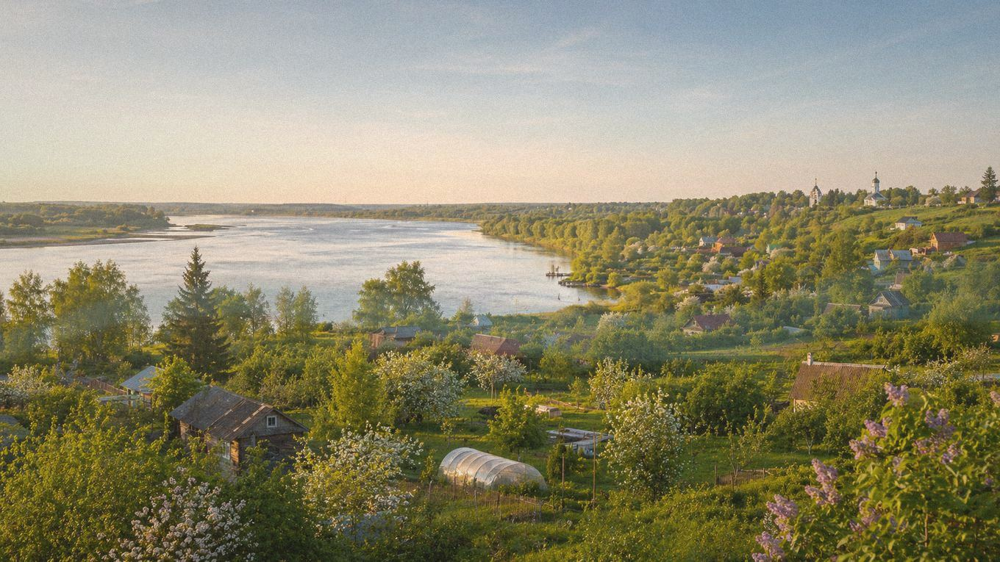

Главная / Воронежская область / центральная чернозёмная зона

Воронежская область · Дон и центр
Что посадить
Что посадить
в Воронежско-Донской зоне
Центральная зона вокруг Воронежа и Дона хорошо подходит для садов и огородов, но на открытых местах заметны суховеи. Главные приёмы — мульча, полив в период налива и защита теплолюбивых культур в начале сезона.
Культуры и рекомендации
По умолчанию культуры отсортированы по надёжности: сначала надёжные, затем рекомендованные, с укрытием и рискованные. Сроки ориентировочные — их стоит уточнять по погоде конкретного сезона.
| Культура | Категория | Рекомендация | Где лучше | Сроки | Комментарий |
|---|---|---|---|---|---|
| Вишняплодовое дерево | Плодовые | Надёжно | Защищённый сад | Посадка: апрель или сентябрь. | Хорошо чувствует себя на продуваемом солнечном месте, не в сырой низине. |
| Гороховощная бобовая культура | Овощи | Надёжно | Открытый грунт | Посев: конец апреля — май. | Ранний посев использует запас весенней влаги и даёт дружный урожай. |
| Кабачоктыквенная культура | Овощи | Надёжно | Открытый грунт | Посев или высадка: конец мая — начало июня. | На чернозёмной гряде быстро растёт; в жару важен регулярный полив. |
| Капуста белокочаннаяовощная культура | Овощи | Надёжно | Открытый грунт | Рассада: апрель; высадка: май. | Урожайна на плодородной почве, но без полива в июле может грубеть. |
| Картофельовощная культура | Овощи | Надёжно | Открытый грунт | Посадка: май; уборка: август–сентябрь. | Стабилен при посадке в мае; на лёгких участках нужна влага при клубнеобразовании. |
| Кукуруза сахарнаяовощная культура | Овощи | Надёжно | Солнечный участок | Посев: май; уборка: август. | Суммы тепла обычно хватает, лучше сеять на солнечном защищённом участке. |
| Лук репчатыйовощная культура | Овощи | Надёжно | Открытый грунт | Севок: конец апреля — май; уборка: август. | Любит сухую солнечную гряду; хорошо вызревает к августу. |
| Малинаягодный кустарник | Ягодные | Надёжно | Сад | Посадка: апрель или сентябрь. | Нужны мульча и полив после цветения, иначе ягода мельчает в жару. |
| Морковькорнеплод | Овощи | Надёжно | Открытый грунт | Посев: конец апреля — май. | Ровные корнеплоды получаются на рыхлой гряде без пересыхания до всходов. |
| Огурецтеплолюбивый овощ | Овощи | Надёжно | Открытый грунт / укрытие | Рассада: май; высадка: конец мая — июнь. | В открытом грунте удаётся при поливе тёплой водой и защите от холодных ночей на старте. |
| Редискорнеплод | Овощи | Надёжно | Открытый грунт | Посев: апрель–май, повторно — август. | Лучший результат весной и в августе, летний посев быстро стрелкуется. |
| Свёклакорнеплод | Овощи | Надёжно | Открытый грунт | Посев: май, после прогрева почвы. | Надёжная культура для чернозёма; хорошо реагирует на прореживание. |
| Смородина чёрнаяягодный кустарник | Ягодные | Надёжно | Сад | Посадка: апрель или сентябрь. | На солнцепёке требует влаги, поэтому лучше место с утренним солнцем и мульчей. |
| Томаттеплолюбивый овощ | Овощи | Надёжно | Открытый грунт / укрытие | Рассада: март; высадка: конец мая — начало июня. | Ранние и среднеспелые сорта в открытом грунте обычно успевают, укрытие ускоряет старт. |
| Тыкватыквенная культура | Овощи | Надёжно | Тёплая гряда | Рассада или посев: конец мая — начало июня. | На тёплой гряде вызревают ранние и многие среднеранние сорта. |
| Укроппряная зелень | Зелень | Надёжно | Открытый грунт | Посев: апрель–июль, с повторениями. | Повторные посевы дают зелень весь сезон, если не пересушивать грядку. |
| Яблоняплодовое дерево | Плодовые | Надёжно | Сад | Посадка: апрель или сентябрь. | Хорошая базовая культура для сада, важны районированные сорта и влагозаряд осенью. |
| Алычаплодовое дерево | Плодовые | Рекомендовано | Защищённый сад | Посадка: апрель или сентябрь. | Зимостойкие гибридные формы лучше размещать на тёплом склоне. |
| Грушаплодовое дерево | Плодовые | Рекомендовано | Защищённый сад | Посадка: апрель или сентябрь. | Удаётся при выборе зимостойких сортов и защите штамба от зимних повреждений. |
| Земляника садоваяягодная культура | Ягодные | Рекомендовано | Садовая гряда | Посадка: май или август. | Хороша на мульчированной гряде с капельным или регулярным поливом. |
| Перец сладкийтеплолюбивый овощ | Овощи | Рекомендовано | Теплица или тёплая гряда | Рассада: февраль–март; высадка: конец мая. | В тёплой гряде или плёночной теплице урожай заметно стабильнее. |
| Сливаплодовое дерево | Плодовые | Рекомендовано | Сад | Посадка: апрель или сентябрь. | Нужны сорта с устойчивостью к подопреванию и место без застоя воды. |
| Фасоль кустоваяовощная бобовая культура | Овощи | Рекомендовано | Открытый грунт | Посев: конец мая — начало июня. | Сеять после прогрева почвы; в засуху поливать во время цветения. |
| Баклажантеплолюбивый овощ | Овощи | С укрытием / уходом | Теплица | Рассада: февраль–март; высадка: конец мая. | В открытом грунте нестабилен; теплица даёт нужную ровную температуру. |
| Виноград укрывнойягодная лиана | Ягодные | С укрытием / уходом | Южный склон под укрытием | Посадка: май; укрытие лозы — октябрь. | На южном склоне возможны ранние сорта, лоза требует сухого зимнего укрытия. |
| Дынябахчевая культура | Бахчевые | С укрытием / уходом | Тёплая гряда под укрытием | Рассада: апрель; высадка: конец мая — июнь. | Ранние сорта можно вести на тёплой гряде, особенно под плёнкой в начале сезона. |
| Абрикосплодовое дерево | Плодовые | Рискованно | Экспериментальный сад | Посадка: весна; цветение требует защиты от заморозков. | Плодоношение зависит от мягкой зимы и отсутствия морозов во время цветения. |
| Персикплодовое дерево | Плодовые | Рискованно | Экспериментальный сад | Посадка: весна; зимняя защита обязательна. | Нужен опытный уход и укрытие, стабильность низкая даже на тёплых местах. |
По выбранным фильтрам культур не найдено.